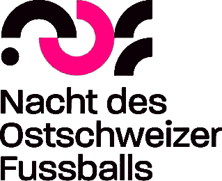
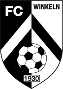
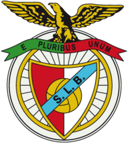
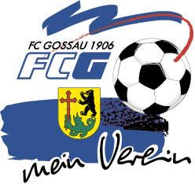

Frisch vom Platz
Alle Videos →
LatteCup
Gossau hat getroffen.
Gossau hat getroffen.
Wer ist der Nächste?
Premiere in Gossau: Ein 14-Jähriger trifft dreimal hintereinander die Latte und schafft den königlichen Hattrick. Als erster LatteKing geht es für ihn jetzt ins San Siro, an ein Heimspiel der AC Milan.
Wo steigt der nächste LatteCup? Du entscheidest mit: Schreib uns deine Gemeinde per Mail.
Gemeinde per Mail
Bald live
Latteschüsse
Live
Live
Wie Radio, nur moderner: Malick kommentiert ausgewählte Spiele live aus dem Stadion. Seid gespannt!
Auf YouTube abonnieren
Unsere Formate
Was bei uns läuft
Nach dem AbpfiffMixed Zone
Direkt nach dem Abpfiff holen wir die Stimmen aus der Mixed Zone: ehrlich, emotional und ungefiltert. →
StadionStadionvlog
Von St. Gallen bis Lissabon, vom Ligaalltag bis zum Cupfinale: Wir nehmen dich mit ins Stadion. →
CommunityChallenges
Von der Super League bis zum Breitensport: Wir fordern Profis und Amateure heraus, und am Ende zählt nur, wer trifft. →
Live-EventLatteCup
Wir kommen in deine Gemeinde. Wer die Latte trifft, wird LatteKing. →
VoteLatteschuss
des Monats Die schönsten Lattentreffer des Monats, und du stimmst ab, wer gewinnt. →
des Monats Die schönsten Lattentreffer des Monats, und du stimmst ab, wer gewinnt. →
Partner & Medien
Unsere Mitspieler
Mit ihnen bringen wir Fussball in die Community.




Für Clubs, Unternehmen und Medien
Du willst mit uns arbeiten?
Ob Verein, Unternehmen aus dem Fussball oder Medienhaus: Wir entwickeln gemeinsame Formate, vom Latteschuss des Monats über den LatteCup in deiner Gemeinde bis zum eigenen Content. Immer nah an der Community, dort wo Fussball gelebt wird.
Lass uns reden
Bleib am Ball